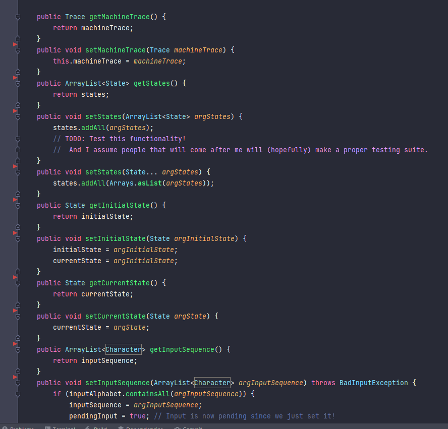
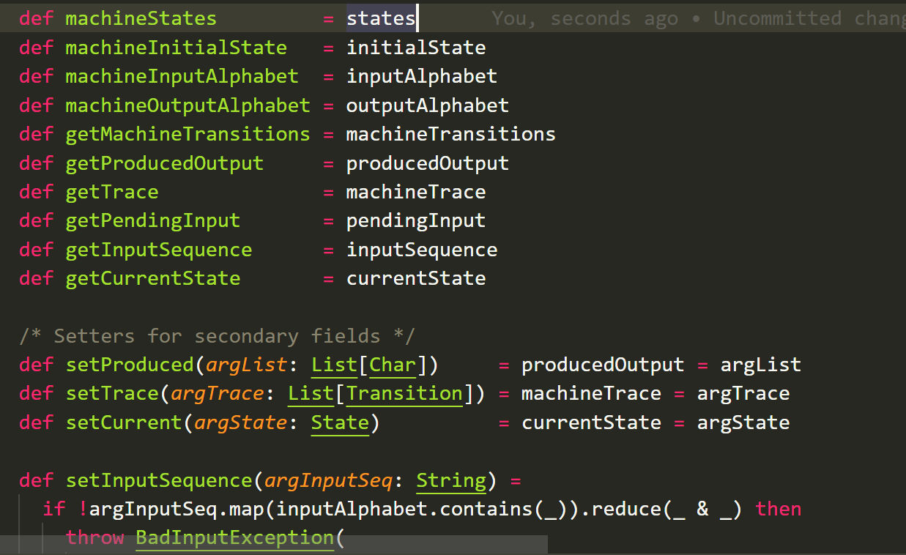

Another Scala post
General Outlook:
There a quite a few things about Scala that make a significant difference in developing this application.
Little progress:
First of all, i need to specify, i haven't progressed very much in terms of all the utilities and UI and such, but i will still update this to keep a track record.
This is also because i had other things in mind to do (most notably PAIP, by peter norvig, i will make a post about this later), along with miscellaneous things, like the stuff I'm reading and so on...
Syntactic fluff:
First off, syntactic things that are more of an increase in QoL than anything:
Method declarations:
Well, in Java you have things like:
public void setMachineTrace(Trace machineTrace) {
this.machineTrace = machineTrace;
}
whereas in Scala, this becomes
def setTrace(argTrace: List[Transition]): Unit = machineTrace = argTrace
And yeah, it really doesn't seem like much ... until it adds up and adds up,
and of course the fact that syntax is in general more concise and snippy in Scala
means even the *body* of the method will be shorter most of the time.
Heck, even in this intentionally-chosen-example-supposed to-make-Java-as-less-bad-as-possible,
I can *still* exploit Scala's type inferencing engine to get this:
def setTrace(argTrace) = machineTrace = argTrace
Now that's nice!
I will demonstrate this further with picture comparisons (still in the realm of getter/setters):
Java:
This is only a fraction of a portion of the entire thing ...
Scala:
Pretty much it.
Although, i will say, some other design subtleties did help, like the fact that i am only exposing one constructor that makes it so that a decent portion of the fields are already set, which removes the need to create setters for them, Although Although, even if they were there, they would obviously be less bloated, so ... [Footnote 1]
The constructor business:
I will see if i can quote some of the official books on this: [Footnote 2]Scala distinguishes between the primary constructor and zero or more auxiliary constructors, also called secondary constructors. In Scala, the primary constructor is the entire body of the type. Any parameters that the constructor requires are listed after the type name.
This helps by making all of the methods that needed to be explicitly called in Java obsolete in Scala since, given that they are un-conditionally executed, I just have to put them in the body with no enclosing method or such.
For example, I called a method in Java to set the machines transition like so:
public void setMachineTransitions(ArrayList transitions) {
for (Transition t : transitions) {
machineTransitions.add(t);
t.sourceState().addOutgoingTransition(t);
t.destinationState().addIncomingTransition(t);
}
}
But in Scala, this is simply one expression, no method needed:
for transition <- machineTransitions do
transition.transitionSource.addOutgoingTransition(transition)
transition.tranditionDest.addIncominTransition(transition)
I find this to be quite neat. (remember that i am only showing one possible example of this ... )
String interpolation
This is rather straightforward.
The biggest use case for this was the toDot() method.
def toDot: String =
s"""digraph {
node [shape=point] INIT;
${currentState.getName} [shape=\"doublecircle\"];
node [shape=circle];
rankdir = LR;
INIT -> ${initialState.getName};
${
var accumulator = ""
for transition <- machineTransitions do
val sourceName = transition.transitionSource.getName
val destName = transition.tranditionDest.getName
val trigger = transition.transitionTrigger
val output = transition.transitionOutput
accumulator += s"$sourceName -> $destName [label=\"$trigger/$output\"];\n"
accumulator += " "
accumulator
}
}"""
versus explicit appends using StringBuilders (ugh ...)
public String toDot() { // TODO: honestly, this can go to utilities man
StringBuilder b = new StringBuilder("digraph Automaton {\n");
b.append(" node [shape=point] INIT;\n");
b.append(" ").append(currentState.stateName()).append(" ").append("[shape=\"doublecircle\"];\n");
b.append(" node [shape=circle];\n");
b.append(" rankdir = LR;\n");
b.append(" INIT -> ").append(getInitialState().stateName()).append(";\n");
ArrayList machineStates = getStates();
for (State s : machineStates) {
var stateTranses = s.outGoing(); // The transitions that come from this state.
for (Transition t : stateTranses) {
b.append(" ").append(s.stateName()).append(" -> ").append(t.destinationState().stateName()).append(" ");
b.append("[label=\"").append(t.transitionTrigger())
.append("/")
.append(t.transitionOutput())
.append(t.wasTaken() ? "\", color=red];" : "\"];")
.append("\n");
}
}
return b.append("}\n").toString();
}
Multiple declarations per file & Top-level declarations:
This is really neat, as it allows me to a) save space and b) make my design choices more explicit.
For instance, all of the exceptions have been declared in Utilities.
I don't need to create a separate ad-hoc class to declare functions and procedures, can just do them at the top-level.
Who knows maybe I'll move all of the machine classes to the same folder \shrug.
That is, unfortunately, it:
I really wanted to make more progress, but now i am faced with a dilemma, should i:- Continue pretty much just translating the java code into Scala, and *then* see where i can go?
- Transform they current code to Functional style, *then* see where i can go?
Not an easy choice to make, since one or the other might require a decent amount of work; eg with the first ill have to learn how to get ScalaFX into the mix, as well as parser combinators possibly, etc ... and with the second ill have to rework then entire model and implement *proper* functional error handling, and ***THEN*** do all of the things related to the parsing shenanigans ...
Footnotes:
- One thing that does seem weird to me right now is that methods can be defined with no argument and must also be called with no argument list (if declared as such), it's kinda nifty but needs some getting used to i guess.
- Programming Scala, by Dean Wampler